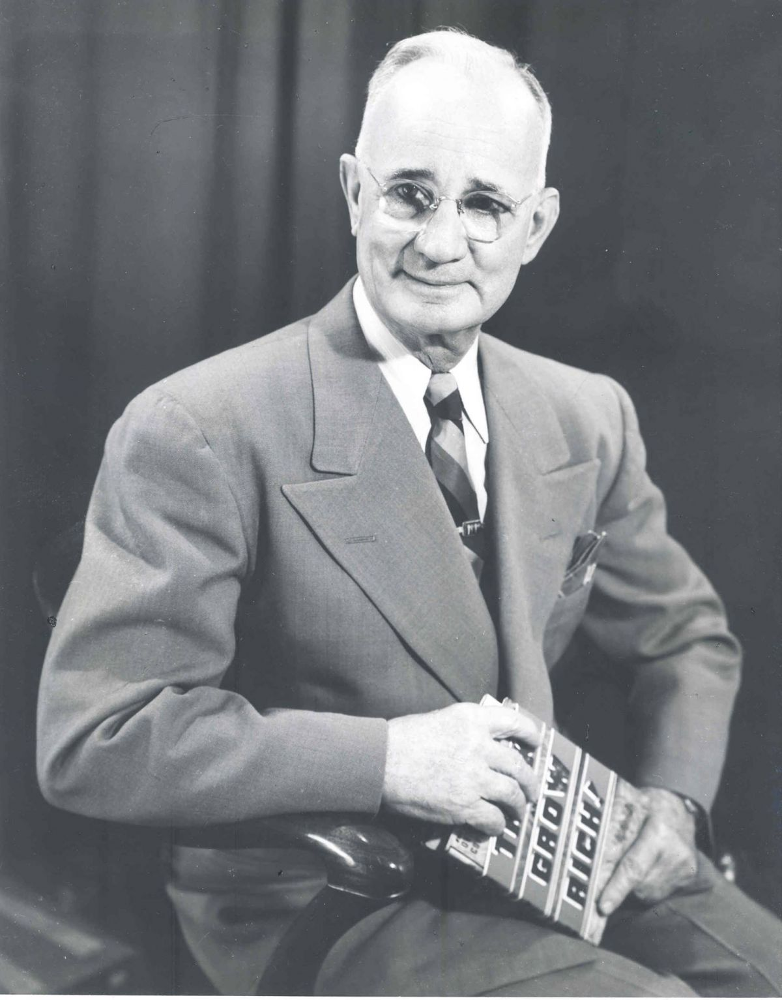
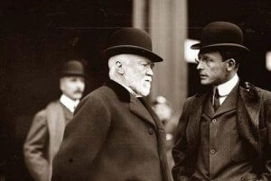

Historia de Napoleon Hill
Napoleon Hill nasceu em 26 de outubro de 1883 no Estado da Virgínia, Estados Unidos em uma família pobre e morreu no ano 1970. Quando tinha 10 anos de idade sua mãe morreu e, em seguida, se tornou um filho rebelde.
Dois anos depois seu pai se casou. Ao estar pela primeira vez frente a sua madrasta comentou: “Napoleão é o pior homem que você pode encontrar”.Ela colocou as mãos em seus ombros e disse: “Menino, isso não é uma falta grave. Talvez você seja a pessoa mais esperta do mundo e, simplesmente, não estão sabendo o que fazer com a sua inteligência”.
Aquelas palavras tiveram um impacto importante sobre a vida de Hill. Aos treze anos escreveu um pequeno jornal chamado “Mountain Reporter”. Ele começou a estudar Direito, mas teve que sair devido a problemas financeiros.
Em 1908, por causa de suas reportagens para o jornal, Napoleon Hill teve a oportunidade de entrevistar o industrial Andrew Carnegie, que não só era o homem mais rico do mundo na época, mas o segundo homem mais rico que a humanidade já conheceu, depois de John D. Rockefeller.
Andrew Carnegie, na ocasião com 73 anos, viu um brilho diferente nos olhos de Napoleon Hill e decidiu revelar ao jovem repórter a sua crença de que seria possível, por meio de extenso trabalho de pesquisa, identificar em homens de triunfo características que poderiam ser desenvolvidas nas pessoas. Era a ciência pela qual tinha prosperado e se tornado um homem tão importante, uma espécie de fórmula para o sucesso. Uma seleção de virtudes, que se combinadas em uma personalidade garantiriam o completo êxito de tal indivíduo. Disse que era necessário identificar as características dos homens e mulheres de sucesso e que poderiam ser implementadas pelo homem comum, contanto que houvesse um método.
O milionário, então, propôs a Hill que iniciasse um grandioso projeto para investigar minuciosamente essas virtudes de pessoas triunfadoras e que desenvolvesse um curso que permitisse aos interessados desenvolver estas características. O Sr. Andrew deu a Hill exatos 60 segundos (sem que ele soubesse disso) para decidir se aceitaria ou não este desafio. Segundo o milionário, os homens que tomam decisões prontamente são capazes de mover-se com uma determinação de propósitos muito maior.
Disse que estava certo de que o trabalho não poderia ser cumprido em menos de duas décadas, afinal, fazer sucesso por um ano é relativamente fácil, permanecer, que é o grande desafio. Porém, estava convicto também de que valeria a pena, pois o resultado beneficiaria milhões de pessoas no mundo inteiro.
Napoleon Hill dedicou mais de 20 anos de sua vida entrevistando e investigando grandes vencedores, e suas carreiras, a fim de isolar e identificar as razões pelas quais tantos e tão poucos conseguem alcançar o sucesso. Entrevistou mais de 16 mil pessoas dentre elas os 500 milionários mais importantes da época e que mostraram a ele a fonte de suas riquezas.
Foi consultor de Relações Externas da Casa Branca durante o mandato do Presidente Woodrow Wilson e também o responsável por escrever e preparar os célebres discursos pronunciados pelo Presidente Franklin Delano Roosevelt durante seu mandato.
Dentre outras personalidades que fizeram parte da pesquisa de Napoleon Hill temos: Thomas Edison, Alexander Graham Bell, Henry Ford, Elmer Gates, Theodore Roosevelt, William Jennings Bryan, George Eastman, John D. Rockefeller.
O resultado de sua pesquisa foi apresentado em 1928, ano que publicou sua primeira obra “A Lei do Triunfo”. Antes de sua publicação oficial esta obra foi submetida a banqueiros, comerciantes e professores universitários, que, pelo seu espírito eminentemente prático e grau de cultura superior, pudessem analisá-lo e criticá-lo. Também apresentou para as duas universidades mais importantes dos Estados Unidos da américa para que examinassem atentamente a obra para corrigir ou eliminar as declarações que parecessem sem base do ponto de vista econômico. Nem uma única modificação foi proposta.
Este livro foi o primeiro tratado mundial sobre formação de líderes e até hoje se apresenta como um dos livros mais estudados do mundo. Hill concluiu que uma das principais características que estes homens tinham em comum e que elevava as suas lideranças era a aplicação do Master Mind. Ele apresentou formalmente, nesta obra, o conceito sobre o que é Master Mind e como aplicá-lo.
Napoleon Hill além de pioneiro no estudo do comportamento humano para o sucesso, ainda é provavelmente o pensador que mais inspira outros autores nessa área do conhecimento.
Atualmente a The Napoleon Hill Foundation (EUA) protege a memória de Napoleon Hill e divulga suas ideias e trabalhos em todo o mundo.